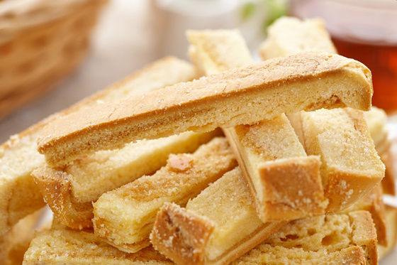
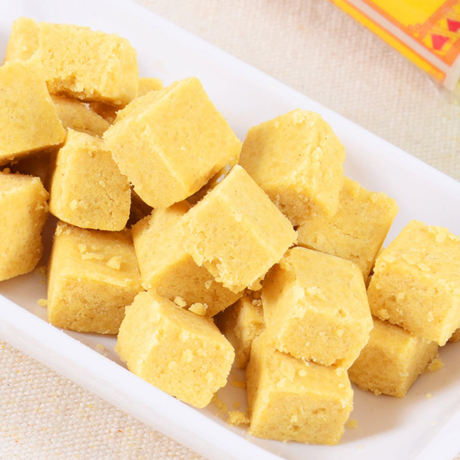
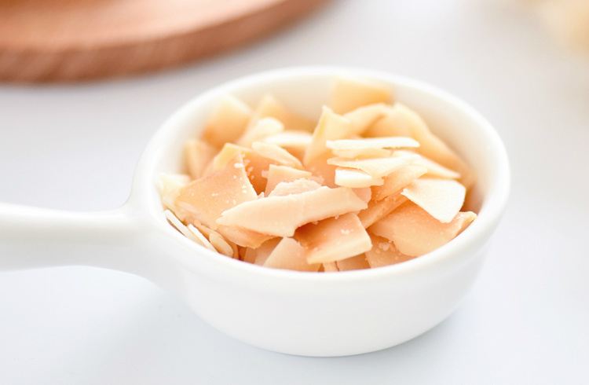

首先为大家推荐的就是这款自己最爱的台湾糕点——花莲县饼奶油酥条。这款糕点是由花莲县饼菩提饼铺的创始人刘师傅开发的，而这家店在当地也有着非常高的人气，店面每天限量200包，食客们提早起来排队，为的就是能吃上最新鲜的奶油酥条。
而对于我们来说，就算只是吃成品后的奶油酥条也会有种停不下来的感觉。它的口感就像是烤制后的吐司面包，撒上砂糖，酥脆香甜。但如果仅仅只是这样的话，它也不可能如此畅销。其火爆的秘密在于酥条中加入了大量的奶油，有着浓郁的奶油香气，让人吃过之后还想吃。
阳黄龙公司是越南最著名的古传绿豆糕生产基地，它家的绿豆糕绝对是小弟吃过最正宗的。
先来说说颜色，天然绿豆粉制作而成的绿豆糕颜色绝对不是像绿色心情一样的绿色，而应该是呈现淡淡的黄色。当你拆开纸盒、纸袋、锡箔纸层层的包装之后，就会看到一枚方方正正的绿豆糕躺在纸上，散发着淡淡的绿豆香气。
黄龙绿豆糕口感简直能让你飞起来，它是入口即化比赛中的冠军，糕体细密，用舌头捻一下就会在口中化开，紧接着会有一股清凉感在口中爆开。绿豆风味十足，香甜且不粘牙。独立包装，卫生又便捷，不过这样的坏处就是吃起来没数，不一会半包就没了。
这款来自泰国的椰子脆片椰香浓郁，因为选用了椰子里最贴近椰汁那一层椰肉为原料，所以脆片的香味和品质都非常好，完全不需要加入任何香精。
经过烘干、去除掉了水分后的椰子脆片风味变得更加浓厚，口感相当酥脆。一口下去，海岛风情就会在口腔中蔓延开来。喜欢清淡零食的朋友，可一定不要错过哦~
